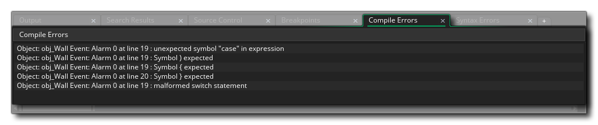

Cuando creas tu juego, es muy fácil olvidarte de declarar una variable o escribir mal una cadena como real, etc.... GameMaker Studio 2 estos errores a medida que se compila o ejecuta el juego y se abrirá una ventana con el error dado así como donde se encontró el error. Esta información también se mostrará en la Salida de error del compilador, como se muestra a continuación: 
Puede hacer clic en cualquiera de las líneas de texto que se muestran y se le dirigirá directamente al objeto o secuencia de comandos que arrojó el error, y luego puede usar la información contenida en el mensaje para identificar exactamente dónde en el objeto o secuencia de comandos el Un error ha ocurrido. Sin embargo, a veces estos errores pueden parecer un poco crípticos, por lo que a continuación puede encontrar una lista completa de todos los errores y una breve explicación de lo que significan:
No program to compile → Un error de compilación anterior ha causado que no se cree el árbol de análisis sintáctico del compilador y, por lo tanto, el compilador no tiene datos de programa para compilar Fatal Error while compiling [name] - bailing details below → Este mensaje simplemente significa que se ha descubierto un error, pero el compilador no puede ubicar qué o dónde (si esto ocurre de manera constante, puede ponerse en contacto con YoYo Games Support y proporcionar los detalles que muestra la ventana de salida del compilador) Recursive macro expansion is not supported → Usaste macros recursivas que se refieren entre sí y se expanden constantemente Unable to find TextureGroup [group] → Por lo general, este error solo se encuentra al tratar de ejecutar un archivo de proyecto con formato incorrecto (si esto sucede de manera constante, es posible que desee ponerse en contacto con YoYo Games Support y proporcionar los detalles que muestra la ventana de salida del compilador) Wrong to convert [value] to number → Ha intentado convertir el valor dado, por ejemplo una cadena, en un número Division by 0 → Has intentado dividir un valor por 0 Invalid object id [object ID] used → Ha intentado acceder a un objeto utilizando un valor de ID que es incorrecto (consulte aquí para obtener información sobre ID de objeto) Unclosed comment (/*) at tend of script → Ha creado un comentario de guión usando /* [comment] */ pero no han suministrado la etiqueta de comentario de cierre (ver aquí para más información) Invalid token → Tiene un carácter no válido en su código de juego, que puede suceder con caracteres de idioma extranjero o Unicode Number [num] en formato incorrecto → El número dado - que se muestra en el error - no es el formato correcto para la función u operación que se realiza, por ejemplo, usted proporciona un número entero cuando se requiere un puntero (consulte la sección sobre Tipos de datos para obtener más información) Unexpected EOF encountered → Ha llegado al final del archivo de forma inesperada al utilizar las Funciones de archivo
Unable to Not a string → ¡Has intentado usar "!" ( not ) en una cadena (para más información sobre cadenas ver aquí ) Unable to Negate a string → Has intentado negar una cadena, por ejemplo " string = -string "(para más información sobre cuerdas ver aquí )
Wrong number of arguments for function [function] → Ha proporcionado demasiados o muy pocos argumentos para la función dada Failed to parse action_execute_script() - incorrect number of arguments received → La acción Execute Script tiene demasiados o muy pocos argumentos para que se llame al script dado Function [function] expects n arguments, a provided → A una función se le ha dado el número incorrecto de argumentos cuando se esperaba un cierto número Unknown function [function] check to see if script is empty → Se ha llamado una secuencia de comandos que el compilador no reconoce (este error generalmente se genera con referencias de recursos de scripts vacíos, ya que el compilador eliminará estos recursos en la compilación) Assignment of an empty value (function does not return anything?) → Ha intentado asignar un valor de retorno desde un script o función cuando ese script o función no devuelve nada Unable to find function [function] → Has llamado a una función desconocida Calling a function that needs an instance and no instance is available → La función o script que se llama es para actuar en una instancia, pero en el momento de la ejecución no existen instancias Calling a function that needs an other and no other is available → Usted ha usado la palabra clave other fuera del evento de colisión o fuera de with declaración Argument naming error, n arguments but no reference found to a → Ha dado una cantidad de argumentos a un script, pero no hace referencia a uno de ellos en el script; por ejemplo, el script toma tres argumentos, pero solo usa los argumentos [0] y [2] (para obtener más información sobre scripts y argumentos ver aquí ) Cannot compare arguments → Ha intentado comparar dos tipos de argumentos diferentes, como una cadena y un número real (para más información sobre scripts y argumentos, vea aquí ) Unknown function or script [functions/script] → El compilador no reconoce la función o script que se llama Cannot use resource name [resource] as it is not being exported → Ha intentado acceder a un recurso que no se ha marcado como parte del proyecto para la plataforma compilada para Cannot use function/script name for a variable, using [functions/script] → Ha intentado usar un nombre de función o un nombre de guión como variable, por ejemplo string = "Hello World" Cannot use an argument outside a script → El construido en argument las variables solo se pueden usar dentro de una secuencia de comandos pero usted ha intentado usarlas en otro lugar (para más información sobre scripts y argumentos, vea aquí ) No references to argument[num] but references argument[num] → Está utilizando una referencia a un argumento que no existe pero que podría asignarse a otro argumento (para más información sobre scripts y argumentos, vea aquí ) Incorrect number of arguments for accessor → Ha proporcionado un número de argumentos incorrecto al usar un descriptor de acceso (para más información sobre los accesores, consulte aquí ) Wrong type of arguments for /
Wrong type of arguments for div
Wrong type of arguments for mod
Wrong type of arguments for +
Wrong type of arguments for -
Wrong type of arguments for &&
Wrong type of arguments for ||
Wrong type of arguments for ||
Wrong type of arguments for &
Wrong type of arguments for |
Wrong type of arguments for ^
Wrong type of arguments for <<
Wrong type of arguments for >>→ Ha proporcionado el tipo de argumento incorrecto para la expresión que se evalúa (para más información sobre expresiones, consulte aquí )
Using uninitialised variable [var] → Ha intentado utilizar la variable nombrada antes de que se haya inicializado (para obtener más información sobre las variables, consulte aquí ) Variable [var] is write-only → Ha intentado cambiar la variable nombrada cuando no se puede cambiar (para obtener más información sobre las variables, consulte aquí ) Unable to find variable named [var] → La variable nombrada no se puede encontrar en la compilación actual (para más información sobre las variables ver aquí ) Malformed variable reference → Ha intentado hacer referencia a una variable de forma incorrecta (para obtener más información sobre las variables, consulte aquí ) Trying to set a read only variable [var] → Ha intentado establecer una variable que sea de solo lectura (para obtener más información sobre las variables, consulte aquí ) Cannot redeclare a built in variable → Ha intentado declarar una variable local usando el mismo nombre que una de las variables integradas (para más información sobre las variables, consulte aquí ) Cannot use resource name for a variable → Tiene el mismo nombre que un recurso del árbol de recursos como variable local (para más información sobre las variables, consulte aquí ) [Variable] is read-only → Ha intentado utilizar una variable que se ha marcado como de solo lectura (para obtener más información sobre las variables, consulte aquí )
Cannot set a constant [constante] a un valor → Has intentado establecer una constante a un valor diferente Constant is invalid here → Ha intentado usar una constante en alguna parte que no es válida para el código que se está ejecutando Cannot assign to [var] - es una constante → Has intentado asignar un nuevo valor a la constante nombrada
Array index should not be negative → Ha intentado acceder, crear o establecer un valor de matriz con un índice de matriz negativo (para más información sobre matrices, vea aquí ) Only 1 or 2 dimensional arrays are supported → Ha intentado crear una matriz que tiene más de 2 dimensiones ( GameMaker Studio 2 solo tiene matrices 1D y 2D; para más información sobre matrices, vea aquí )
Malformed Conditional operator → Ha utilizado un operador condicional erróneo (ternario) o if declaración, y no el formato [condition] ? [expression1] : [expression2]; (para más información sobre if y los operadores ternarios ven aquí ) If requires a then statement → Usted ha escrito un if declaración y expresión para evaluar, pero no da ningún then parte para ejecutar (para obtener más información sobre if ver aquí ) malformed assignment statement → En el código, está utilizando un operador de asignación incorrecto (para obtener más información sobre las asignaciones, consulte aquí ) Malformed if statement
Malformed repeat statement
Malformed while statement
Malformed do statement
Malformed for statement
Malformed with statement
Malformed switch statement
Malformed break statement
Malformed continue statement
Malformed exit statement→ La estructura de la declaración dada es incorrecta. Para obtener detalles específicos, consulte la sección correspondiente aquí: GML Overview Malformed post inc or dec statement → Has intentado usar [var]++ o [var]-- de manera ilegal (para más información sobre ++ / - ver aquí ) Malformed pre inc or dec statement → Has intentado usar ++[var] o --[var] de manera ilegal (para más información sobre ++ / - ver aquí ) Malformed global gml_pragma → Ha creado una cadena global incorrecta al usar gml_pragma (para más información sobre gml_pragma ver aquí ) Malformed PNGCrush gml_pragma → Ha creado un comando de cadena incorrecto para PNGCrush cuando usa gml_pragma (para más información sobre gml_pragma ver aquí ) Malformed Texgroup.Scale gml_pragma → Ha creado una cadena global incorrecta al usar gml_pragma (para más información sobre gml_pragma ver aquí )
Default cannot be used multiple times in a switch → En tus switch declaración que has definido default: más de una vez (para más información sobre switch ver aquí ) Clause expression type mismatch (clause expressions should all be the same type) → En tus switch está comprobando dos constantes diferentes case tipos, por ejemplo, una cadena en un caso y un número entero en otro (para obtener más información sobre switch ver aquí ) Case argument should be a constant → Ha intentado utilizar un valor que no se evalúa como una constante dentro de uno de sus switch casos (para más información sobre switch ver aquí ) Statement in a switch MUST appear after case or default → Usted ha agregado una declaración a un switch fuera de cualquiera de case: o default: llamar (para más información sobre switch ver aquí ) Duplicate case statement found / original here → Usaste el mismo case constante en dos lugares diferentes dentro de un switch (tenga en cuenta que el comentario "original aquí" estará en otra línea y se puede hacer clic para mostrar el original case:, y puedes encontrar más información sobre switch aquí )
No return value from expression (does expression have a return value?) → Ha intentado asignar un valor de retorno de una expresión a una variable cuando la expresión no devuelve nada (para obtener más información sobre expresiones, consulte aquí ) Expecting expression after the '.' → Ha utilizado la notación de punto (".") Erróneamente y no ha agregado una expresión de palabras posteriores correctamente (para obtener más información sobre expresiones, consulte aquí ) Unexpected symbol [símbolo] en expresión → La expresión usa un símbolo que no forma parte del conjunto de símbolos de expresiones aceptadas; se mostrará el símbolo en cuestión (para obtener más información sobre expresiones, consulte aquí )
Unknown Pre operator → Ha intentado usar un símbolo como preoperador cuando ese símbolo no está permitido, por ejemplo **[var] o >>[var] - solamente ++ y -- son aceptables (para más información sobre ++ / - ver aquí ) Unknown Post operator → Ha intentado usar un símbolo como post operador cuando ese símbolo no está permitido, por ejemplo [var]** o [var]>> - solamente ++ y -- son aceptables (para más información sobre ++ / - ver aquí ) Unknown pragma [gml_pragma string] → Ha utilizado una cadena de pragma desconocida para el compilador (para obtener más información sobre gml_pragma ver aquí ) Unknown unary operator → Ha intentado utilizar un símbolo desconocido como operador unario (consulte aquí los símbolos aceptados) Unknown binary operator → Ha intentado utilizar un símbolo desconocido como operador binario (consulte aquí los símbolos aceptados) Unknown operator [operador] → Ha intentado utilizar un símbolo desconocido como operador (el símbolo se mostrará en el error, y para obtener una lista de símbolos aceptados, consulte aquí )
Break used without context → No has usado break Dentro de un switch o un bucle o cualquier otra estructura permitida (consulte aquí para obtener más información sobre break ) Continue used without context → No has usado continue dentro del contexto correcto (ver aquí para más información sobre continue ) continue statement is not allowed at this point → Usted ha usado continue dentro de una parte de su código donde no está permitido (consulte aquí para obtener más información sobre continue )
enum num is invalid → El número de enumeración no es válido para la enumeración (consulte aquí para obtener más información sobre Enumeraciones) malformed enum → No has creado el enmu correctamente (mira aquí para más información sobre Enums) enum [enum] ya ha sido definido → Ha intentado definir un enmum usando el mismo nombre que otro anteriormente definido (vea aquí para más información sobre Enums) malformed enum entry → La enumeración tiene una entrada inválida (mira aquí para más información sobre Enums) enum expression must be an integer constant → La entrada enmu no se evalúa como una constante entera (vea aquí para más información sobre Enums) enum reference [clave] no existe en [enum] → Ha intentado hacer referencia a una entrada de enumeración utilizando una clave que no se haya definido previamente para esa enumeración (consulte aquí para obtener más información sobre Enum)
Symbol ( expected
Symbol ) expected
Symbol , or ) expected
Symbol { expected
Symbol } expected
Symbol , or } expected
Symbol : expected
Symbol ; expected
Symbol [ expected
symbol ] expected
Symbol , or ] expected→ No ha utilizado un símbolo obligatorio al escribir su código (consulte la sección sobre Expresiones o sobre Características del idioma para obtener más información) Expected id or string → Ha utilizado un valor que no es ni una ID de capa ni un nombre de capa, como una cadena, en una de las Funciones de capa keyword Until expected → Has creado un do... until loop, pero se olvidó de proporcionar un until expresión (ver aquí para más información sobre do... until ) Function name expected → Ha utilizado algo que no sea un nombre de función en su código donde debería ir una función (consulte aquí para obtener más información sobre el uso de funciones) variable name expected → Ha proporcionado un nombre que no es un nombre de variable donde se espera uno (consulte aquí para obtener más información sobre las variables) Assignment operator expected → Ha creado una tarea que espera un operador pero no se ha proporcionado ninguna (consulte aquí para obtener más información sobre la asignación de valores)
Android ARM ToolChain directory [dir] no existe → El enlace proporcionado en Android Preferencias de Android para la cadena de herramientas ARM es incorrecto y no existe. Android MIPS ToolChain directory [dir] no existe → El enlace proporcionado en Android Preferencias de Android para la cadena de herramientas MIPS es incorrecto y no existe. Android x86 ToolChain directory [dir] no existe → El enlace proporcionado en Android Preferencias de Android para la cadena de herramientas x86 es incorrecto y no existe. Android NDK directory [dir] no existe → El enlace proporcionado en Android Preferencias de Android para Android NDK es incorrecto y no existe.